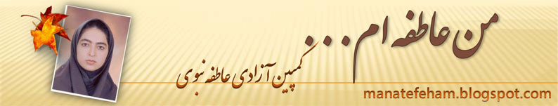

|
|
|
Browsing
Contact Us |
Campaigners |
Face to Face |
Tribune |
Interview |
News |
On the Web |
One Million |
Report
Farsi | Français | German | Italian | Spanish | العربية Also in this section
|
 I am Atefeh: Campaign to Free Atefeh Nabavi LaunchedThursday 26 November 2009 Change for Equality: While the news of heavy sentences issued in the case of political activists has been widely publicized by the press and broadly published on internet sites covering the developments after the disputed Presidential elections on June 12, 2009, the four year mandatory sentence issued in the case of Atefeh Nabavi, on November 24, 2009 has not received due attention by the press. Atefeh Nabavi, 28, is the first woman to receive a prison sentence in relation to charges brought against her for participating in protests following the Presidential elections in June, 2009. She was arrested, charged and sentenced for participating in a protest that drew millions on June 15, 2009. She is among the many unknown and ordinary citizens who were arrested for their participation in protests and only because they demanded accountability from officials with respect to their votes. The Campaign to free Atefeh, called “I am Atefeh” was launched by a group of social activists to raise awareness about the unjust and heavy sentence issued in the case of this 28 year woman, whose name coincidentally means affection or empathy in Farsi. In its first call to action, the Campaign “I am Atefeh” has invited all those who participated in protests following the elections, especially the June 15th protest, to write in support of Atefeh and in objection to the harsh sentence issued in her case by the Judiciary. The call to action, urges ordinary citizens and social activists to write about their participation in the protests and confess that they have committed the same crime as Atafeh. “We want to say that we too think like Atefeh. We are all Atefeh. You have to imprison us all,” reads the call to action. Parastoo writes: People were respectful toward one another. You could see mutual trust in their eyes. There was silence and only silence. Nothing was broken. No one was insulted. There was only one question, apparent in the gaze of the protesters, “where is my vote?” It started on Monday, then Tuesday, then Wednesday, then Saturday..Friday, Wednesday, Thursday and… I was there. We were there. Millions were there. The Media announced that there were millions at the protest—all of them critical, and protesting. From among those participating, some were killed. Some were imprisoned. And one is supposed to be imprisoned for four years? We are all Atefeh. We were all in those protests. We were all in the streets. Either we all serve four years in prison, along with Atefeh, or Atefeh must be released. Amir Hossein Writes: On June 25, I saw Atefeh in the street protests. We walked along side one another till Azadi (Freedom) Square. Whatever she did, I too did. We walked, we were silent, we chanted slogans, we laughed, we were happy, and we enjoyed the energy of the public. This is all that occurred on that afternoon. If in response we have to be imprisoned for four years, then I along with millions of other citizens, who were present on that afternoon, all belong in prison with Atefeh. Either she is not guilty or we are all criminals. Visit the site of "I am Atefeh" the Campaign to Free Atefeh Nabavi |